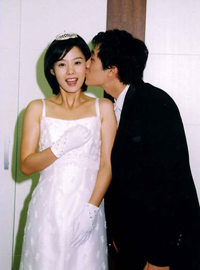

天天编程网
tvb手册
八婆笔记
心情说
日剧场
日志
未分类
电幻光影
看图说话
韩剧志
韩剧经典情侣大盘点（5）
《玻璃鞋》中的金贤珠和苏志燮

《ALL IN》中的宋慧乔和李秉宪
《窈窕淑女》中的金喜善和高洙
《夏日香气》中的孙艺珍和宋承宪
《爱在哈佛》中的金泰希和金涞元
《白雪公主》中的金静华和李莞
《甜蜜间谍》中的秋相美和丹尼斯.吴
《春天华尔兹》中的韩孝珠和徐道英
导航栏
2006年不应该错过的韩剧
2007年不应该错过的韩剧
2007年韩剧之一月
2007年韩剧之七月
2007年韩剧之三月
2007年韩剧之六月
2007年韩剧之十月
2007韩剧推荐之十二月
2008年韩剧推荐（上）
[转载]戏说韩国综艺情侣之XMAN篇
[转载]戏说韩国综艺情侣之反转剧篇
[转载]戏说韩国综艺情侣之情书篇1
[转载]戏说韩国综艺情侣之情书篇2
[转载]戏说韩国综艺情侣之情书篇3
[转载]戏说韩国综艺情侣之情书篇4
一个角色的胜利——韩剧男猪宿命论
写给爱着韩剧的我们之韩剧典藏(199…
太阳的女人：是谁造就今天的我
我人生最后的绯闻：希望旧爱还很美
盘点韩剧新晋男主角（上）
盘点韩剧新晋男主角（下）
韩剧“姐弟恋”逐个数（1）
韩剧“姐弟恋”逐个数（2）
韩剧中那些令人难忘的第二男猪们
韩剧经典情侣大盘点（1）
韩剧经典情侣大盘点（2）
韩剧经典情侣大盘点（5）
韩剧经典情侣大盘点（３）
韩剧经典情侣大盘点（４）